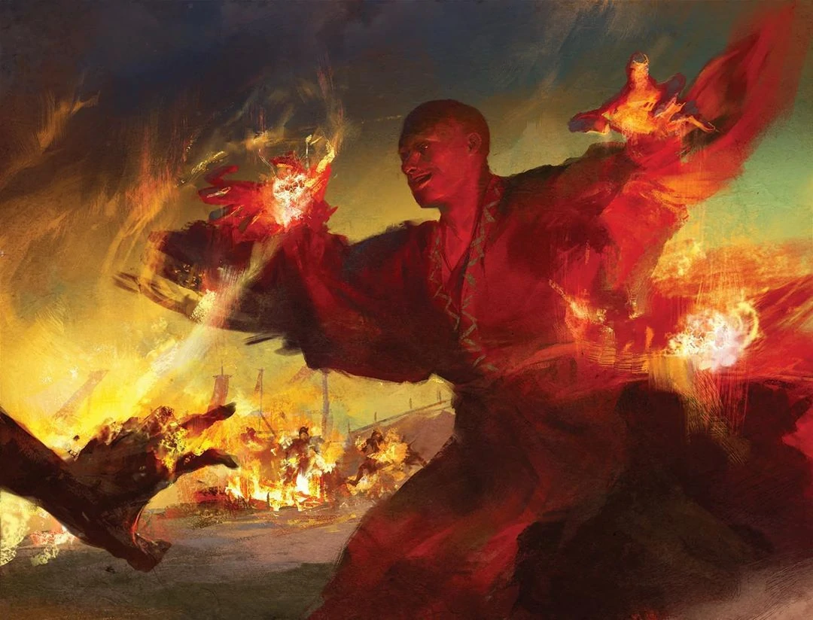

He of the milky eyes and the smoke-scented robes;
he whose dance carries the temple's flame.

| Tier | Unarmored | With Armor |
|---|---|---|
| Trivial | 13 | 18 |
| Minor | 26 | 36 |
| Major | 39 | 54 |
| Phase | Bonus | Roll | Total |
|---|---|---|---|
| Initiative (Speed) | +10 | 34 | 54 |
| Make a Wave (Footwork) | +15 | 29 | 54 |
| Focus on Breath | +10 | — | — |
| Action | Bonus | Roll | Total |
|---|---|---|---|
| Main Attack | +15 | — | 40 |
| Secondary Attack (with technique) | — | — | — |
| Energy Attack | +10 | 34 | 44 |
It is said that a famous master created this style long ago and that he became so quick that he could overtake his own shadow. Swiftness is the key to overcoming all adversity, he teaches, anticipating and eliminating problems before they can harm you. This style always stays on the move and seizes the initiative, striking an opponent and then retreating before a counter-attack can be made. Although it uses orthodox techniques, it is highly popular due to its fierce and impressively flashy displays, making it seem much more spectacular than its fundamental workings are.
Few forces in the world are as primal and respected as fire, so it is no wonder that this sutra was a common art even in ancient days, particularly in the west where the sutras are thought to have been first written. Through meditation and purification, the student learns how to excite his own yang energy to the point of ignition.
| Burn 燒 | Applies to toughness. |
| Shock 震 | +5 on the penalty. |
| Freeze 凍 | Breath penalty plus takes up River slots. Minor = 1 slot. Major = 2. |
| Poison 毒 | Breath penalty but gives −1 to the Breath penalty. Minor = −2 Breath. Major = −3 Breath. |
A scholar who carries the saber and the I Ching with equal seriousness, Ghost Li wields the battlefield art of Bone Fed Wolf Fang and the punishing Iron Body Skill. His Chi Deviation aspires to eradicate corrupt military officers and one day stand as a righteous general himself. Where the Dervish reads flame, Ghost Li reads fate — his predictions and prognostications have already pulled the party through the snares of the Black Lotus.
A doctor whose past as a bandit has not faded from her — she exudes an aura of dread, and those who meet her are sure to be plagued by nightmares that very night. She fights with Storm God's Fury and the deadly Thousand Venoms sutra, and her medical art lets her diagnose or create conditions in others' Chi. Her saber is as sharp as her acupuncture needles; both have done the work of the road.
The party set out to avenge Mountain's Shadow and to find the Hooded Cobra of the Black Lotus. Along the way they defeated a Tiger Shark of that same society — a lesser legend cut down — and learned that the town they sought was Magnificent Ink.
Approaching a new village, the party defeated three Wulin — lesser legends of the Black Lotus. They learned that the Hooded Cobra had passed through, wounded, with five men in his retinue and a cart for the injured. Someone had pierced him with a spear and blocked his chi between here and Mountain's Shadow; a Black Lotus necklace was recovered. Names surfaced: Third Dog Brother, his lieutenant — and the leader of the Black Lotus himself, the Black Storm Boot.
The party laid an Entanglement Curse upon the Hooded Cobra — Isolation and Paranoia, an accumulation of enemies. They did not want him dead. Not yet. They learned they may be able to inflame the curse later.
The party was offered a ship to Magnificent Ink. They met Ancient Blade, who has his own interest in killing the Black Lotus, and learned that the Hooded Cobra had not returned to the Black Lotus headquarters. They made friends with the Fallen Leaves, who promised to find them lodging.
After Ancient Blade had gone, someone came in with poisoned wine. The others left, and told the party to come back tomorrow to speak with someone.
A prediction returned +10 in their favor against the Black Lotus. They met the Skeleton Secretary — a balding old man with long hair, clearly Wulin — flanked on either side by two bodyguards. Several of these names are spoken of in the Dragon Tiger Gate.
They learned that the Black Lotus believes the attack on Mountain's Shadow was a crime. The Hooded Cobra is now in the Merchant District of Magnificent Ink, taken up residence in the back of a doctor's office — Gou Mai — with whom the Cobra has a long history. They learned further that Gold Dragon had previously defeated the Hooded Cobra, and that the attack on Mountain's Shadow had been a reaction to that defeat. The leadership of the Eagle's Talons is up for grabs, and their conflict ties into it all.